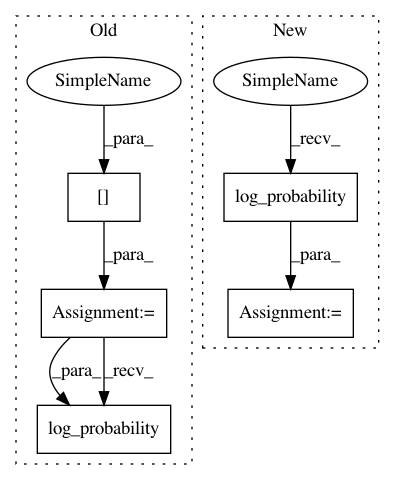

618ac4edb1bf01124413f5b9d2fe0ef157f5edd8,tensorforce/core/models/pg_prob_ratio_model.py,PGProbRatioModel,tf_loss_per_instance,#PGProbRatioModel#Any#Any#Any#Any#Any#Any#Any#Any#,80
Before Change
log_probs = list()
for name in sorted(self.distributions):
distribution = self.distributions[name]
distr_params = distribution.parameterize(x=embedding)
log_prob = distribution.log_probability(distr_params=distr_params, action=actions[name])
collapsed_size = util.product(xs=util.shape(log_prob)[1:])
log_prob = tf.reshape(tensor=log_prob, shape=(-1, collapsed_size))
log_probs.append(log_prob)
After Change
for name, distribution in self.distributions.items():
distr_params = distribution.parameterize(x=embedding)
action = actions[name]
log_prob = distribution.log_probability(distr_params=distr_params, action=action)
collapsed_size = util.product(xs=util.shape(log_prob)[1:])
log_prob = tf.reshape(tensor=log_prob, shape=(-1, collapsed_size))
log_probs.append(log_prob)
In pattern: SUPERPATTERN
Frequency: 3
Non-data size: 5
Instances
Project Name: reinforceio/tensorforce
Commit Name: 618ac4edb1bf01124413f5b9d2fe0ef157f5edd8
Time: 2019-01-10
Author: alexkuhnle@t-online.de
File Name: tensorforce/core/models/pg_prob_ratio_model.py
Class Name: PGProbRatioModel
Method Name: tf_loss_per_instance
Project Name: reinforceio/tensorforce
Commit Name: 618ac4edb1bf01124413f5b9d2fe0ef157f5edd8
Time: 2019-01-10
Author: alexkuhnle@t-online.de
File Name: tensorforce/core/models/pg_log_prob_model.py
Class Name: PGLogProbModel
Method Name: tf_loss_per_instance
Project Name: reinforceio/tensorforce
Commit Name: 618ac4edb1bf01124413f5b9d2fe0ef157f5edd8
Time: 2019-01-10
Author: alexkuhnle@t-online.de
File Name: tensorforce/core/models/pg_prob_ratio_model.py
Class Name: PGProbRatioModel
Method Name: tf_reference